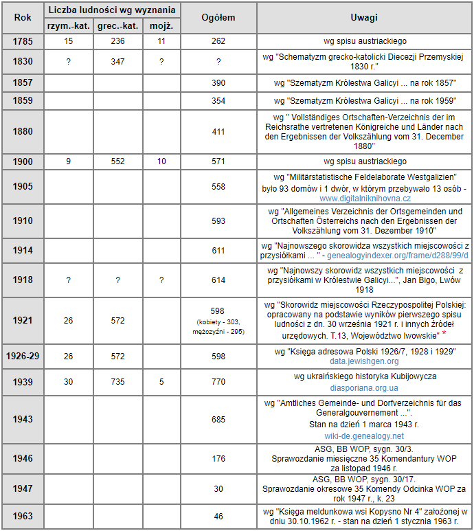

Demografia Kopysna
Liczebność ludności Kopysna na przestrzeni lat 1785-1963 przedstawia poniższa tabela.

* - wg źródła przynależność do narodowości polskiej deklarowały 34 osoby, a pozostali do narodowości określanej jako rusińska; w miejscowości znajdowało się 105 budynków mieszkalnych (w tym jeden to dwór).
Na stronie internetowej Archiwum Państwowego w Przemyślu (skany.przemysl.ap.gov.pl) można zapoznać się z cyfrową kopią ksiąg metrykalnych Greckokatolickiego Biskupstwa w Przemyślu - parafii Rybotycze z filią Kopysno (dekanat Dobromil) obejmujących lata 1784-1869. Dane Kopysna obejmują skany o numerach od 146 do 164 i od 179 do 186.